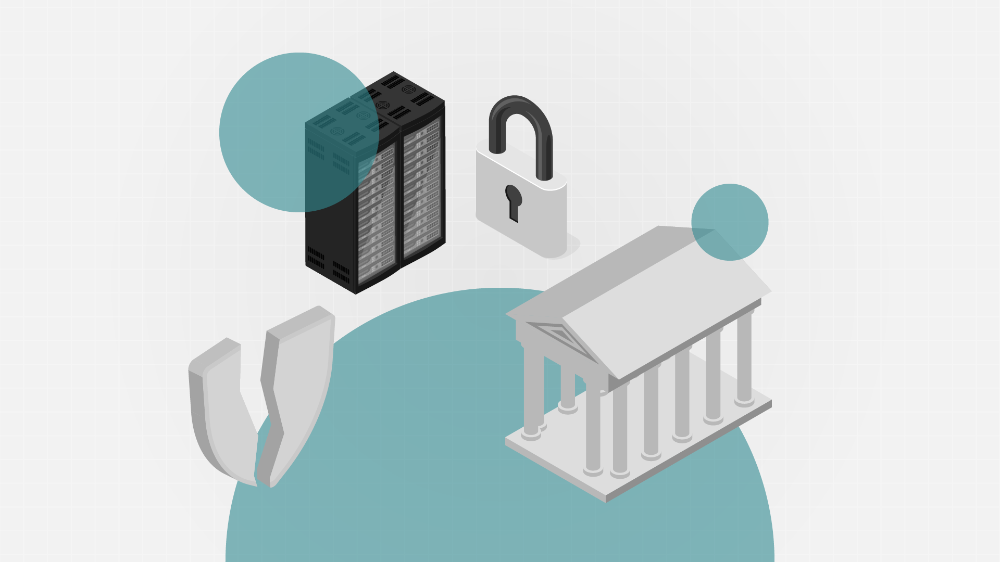

When the Data is Gone
This article was first published in Nightingale on November 20, 2024.
When Cartoon Network abruptly erased its entire online archive, decades of web content vanished in an instant. At the same time, Boomerang, a platform that had housed much of Cartoon Network’s classic catalog, shifted its library to the Max streaming platform. What seemed at first like a simple consolidation of content soon felt like a loss. Nostalgia-inducing shows like Ben 10, Steven Universe, and Chowder began disappearing without warning. Each removal was a quiet reminder of how ephemeral digital access can be, even to content we once believed permanent.
This unsettling realization made the concept of media preservation, often relegated to formal archives and academic studies, feel personal. I found myself tracking down hard copies of favorite shows to safeguard them—not just against the physical degradation of discs but against the creeping disappearance of cultural materials that reflect specific eras and viewpoints. These losses aren’t just personal frustrations; they highlight a systemic weakness in our digital infrastructure, where history can vanish without notice or recourse.
A few months ago, I embarked on a digital preservation project of my own. What began as a seemingly straightforward task—building a personal media server—took on greater urgency. Using a ZimaBlade 7700, a compact yet versatile device, I set up two 8TB hard drives and began transferring years’ worth of DVDs: movies, television series, entire seasons preserved on fragile discs. The goal was convenience, but it quickly became something more—a way to reclaim control in an age where access to the things we love feels increasingly precarious.
Cartoons, films, and other forms of media may not typically qualify as “historical data,” yet they carry embedded cultural narratives, snapshots of societal trends, and evolving norms. With recent reports of Distributed Denial of Service (DDoS) attacks targeting entities like the Internet Archive, a troubling question emerges: how much of our digital heritage is quietly slipping away? And what does it mean for a society when its collective memories—the lighthearted as well as the profound—are so easily erased from public access, potentially lost forever?
![Infographic timeline depicting a series of events in October and November, featuring a horizontal layout with dates and icons. The timeline includes stylized illustrations of a server rack, a building with columns, a laptop screen showing a website, a broken shield, and an open padlock. Text boxes accompany each date, detailing events such as DDoS attacks, data breaches, and service restorations. The design incorporates teal accents and a light background, with the Internet Archive logo at the top left and a credit to William Careri at the bottom right.](../assets/images/portfolio/data-is-gone-ddos.png)
A timeline of the DDoS attacks affecting the Internet Archive. A Distributed Denial of Service (DDoS) attack is a cybercrime that involves flooding a server with internet traffic to make a website, computer, or online service inaccessible. Source: Internet Archive; Design: William Careri.
This is not a new concept
I’m reminded of Marion Stokes. From the tumultuous events of the 1970s to the dawn of the digital age, the Philadelphia activist, librarian, and television producer tirelessly amassed over 70,000 VHS tapes containing non-stop news coverage. But this was no ordinary collection. For Marion, the news was more than just a fleeting moment on the screen. It was a vital historical record, a window into the soul of society, and a snapshot of our collective evolution. In an era of constant change and flux, Marion and her extraordinary VHS tape archive is a tale of obsession, intrigue, and the importance of preserving our past.
Sean Fagan with the Marion Stokes video archive, 2014 pre-sort. Photograph by Brett Brownwell, Internet Archive.
Marion Stokes’ commitment to preserving television broadcasts was more than a personal project—it was a powerful countermeasure against the impermanence of media. Her vast archive of VHS tapes captured news and events that, if left to the fate of corporate interests or technological shifts, might have vanished without a trace. Stokes understood that these recordings were not just ephemeral entertainment; they were cultural artifacts, snapshots of societal perspectives, and evolving narratives.
In much the same way, today’s media collectors and data visualization artists play a vital role in preserving the digital past. The sweeping erasures on streaming platforms echo Stokes’ mission, underscoring an urgent need to protect the digital world’s fragile memory before it slips through our fingers, one missing file at a time.
Spontaneous data deletion should scare you
The fragility of digital archives and the spontaneous deletion of data pose a unique challenge to the field of data visualization. For visualization artists, who rely on historical and real-time data to tell meaningful stories, the sudden disappearance of datasets isn’t just an inconvenience—it’s a barrier to truth, context, and continuity. When data vanishes, we lose more than just numbers or records; we lose the threads that connect insights across time, dismantling the larger narratives that might otherwise emerge.
From a data humanism perspective, the stakes are especially high. Data humanism emphasizes the human context behind data points, viewing them as more than abstract information to be processed. It treats data as a bridge to human stories, and visualization as a medium to bring those stories to life in ways that inspire empathy and reflection. But when datasets disappear—whether through platform changes, corporate decisions, or cyber-attacks—visualization artists are cut off from essential materials that fuel this process of discovery and connection.
This impermanence is not just an obstacle for artists but a deeper societal issue. If data points that capture essential aspects of our world vanish unpredictably, the ability to draw insights from history and context weakens. Patterns go unrecognized, biases slip through unnoticed, and societal issues fade from the public eye, leaving us with a fragmented and incomplete view of reality. Data visualizations grounded in humanism should serve as records, preserving insights that resonate on both intellectual and emotional levels. When data becomes as ephemeral as a tweet, visualization artists must question how best to protect the integrity of their work and, ultimately, the stories they aim to tell.
![A close-up, slightly angled shot of a Zimablade 7700 single-board computer. The device is housed in a black enclosure with a transparent panel revealing the internal circuitry. A circuit board and components are visible through the clear panel. The device has a rectangular shape with a handle-like structure on the top. Cables are plugged into ports on the side of the device, including what appears to be an Ethernet cable. The device rests on a dark surface with a patterned cloth visible in the background.](../assets/images/portfolio/data-is-gone-zimablade.jpg)
My ZimaBlade 7700, housing a personal media server.
What you can do about it
Data visualization artists aren’t powerless in the face of data’s fragility. While the threat of data erasure looms, artists and analysts can take active steps to safeguard their sources, ensuring that the stories they tell have the chance to endure. First, creating local copies of datasets and backing them up to physical storage offers a level of protection. Just as we save our own personal memories, these datasets represent collective memory, and they’re worth preserving beyond a single, vulnerable source. While it may be tempting to trust that publicly available data will remain online, a local archive is an artist’s insurance against impermanence.
But preservation shouldn’t stop at individual copies. Visualization artists can leverage public repositories like the Internet Archive or other data libraries to share and secure their datasets. By uploading historical data to open-access platforms, we contribute to a collective effort that transcends individual projects. In doing so, we ensure that even if a source disappears, the data lives on for future artists, researchers, and the public to use and interpret. These repositories are a shared foundation that supports continuity across projects, disciplines, and even generations.
The role of visualization artists can expand to act as advocates for data integrity. Open-source tools, transparent data collection practices, and data-sharing initiatives all serve as bulwarks against spontaneous deletion. By engaging with communities that value open access, visualization artists can support broader conversations on digital preservation and advocate for policies that protect data as a public good.
The effort to preserve data is an act of stewardship. Visualizing data is more than arranging numbers or statistics; it’s about capturing the human experience as it unfolds. If we view ourselves as caretakers of digital memory, then it becomes our responsibility to protect that memory from slipping away. After all, data visualizations not only tell the stories of today but also create a legacy for tomorrow—one we’re all responsible for preserving.